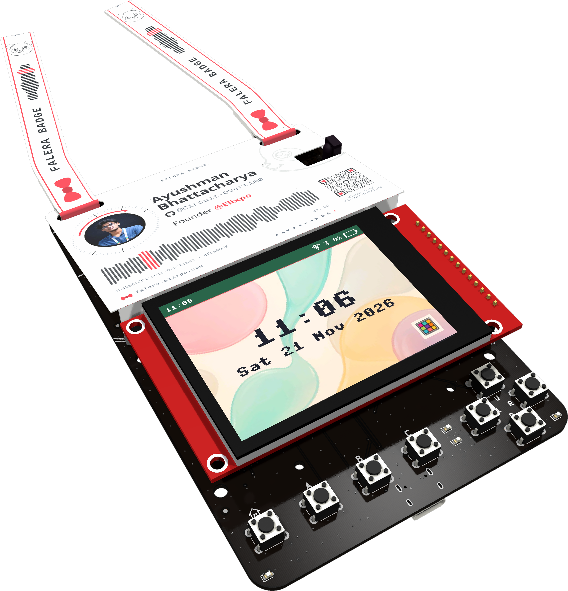
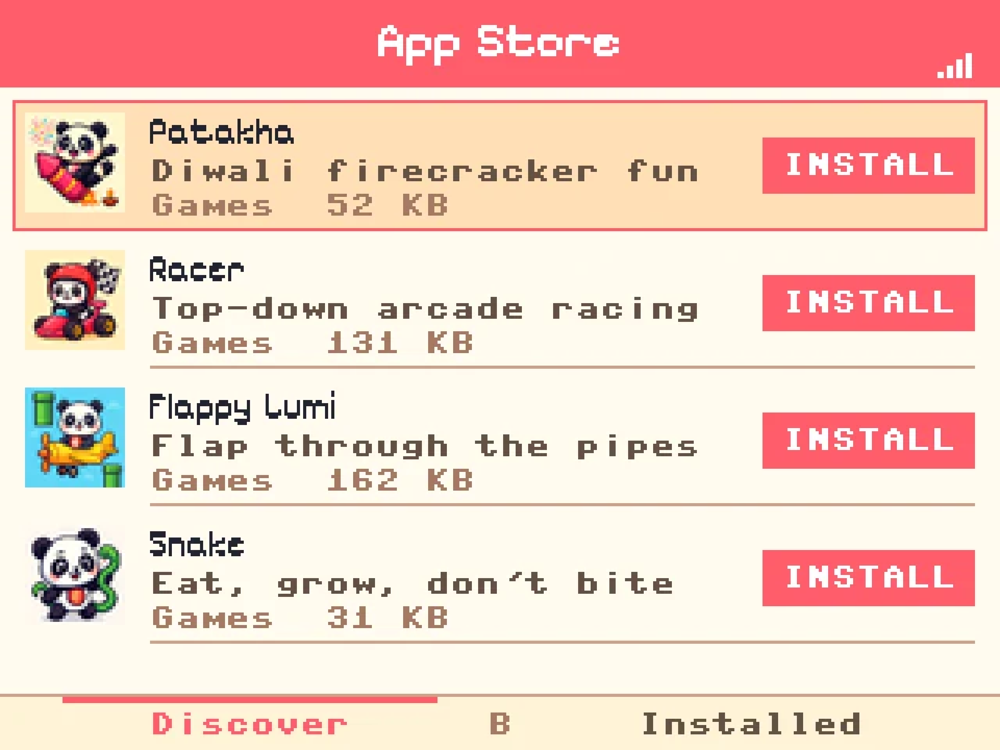
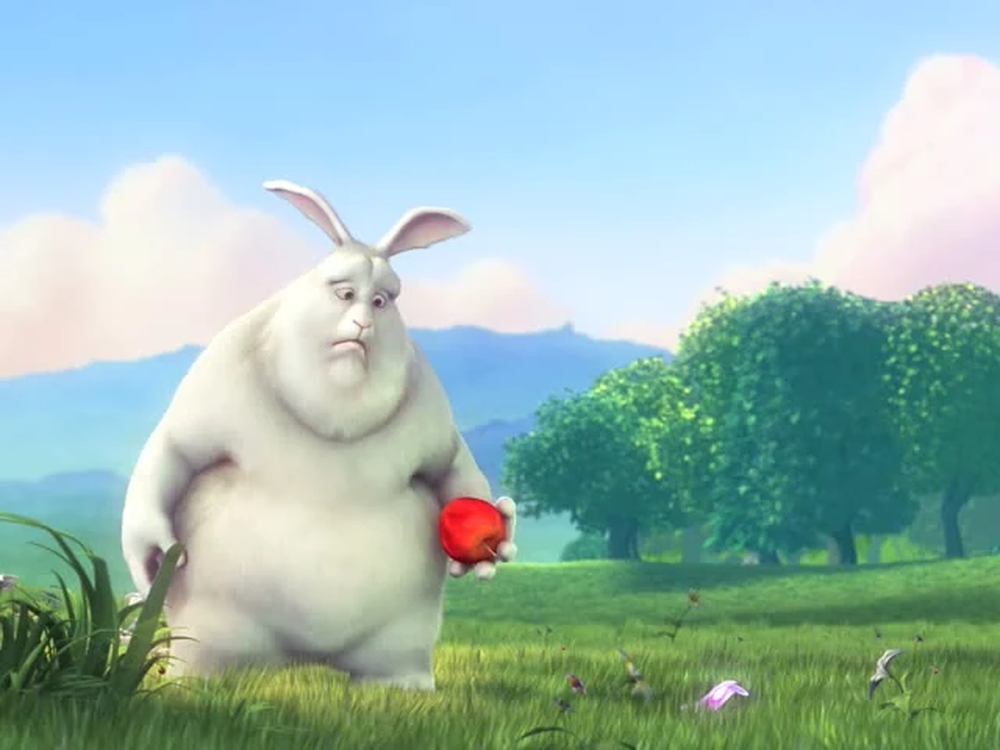
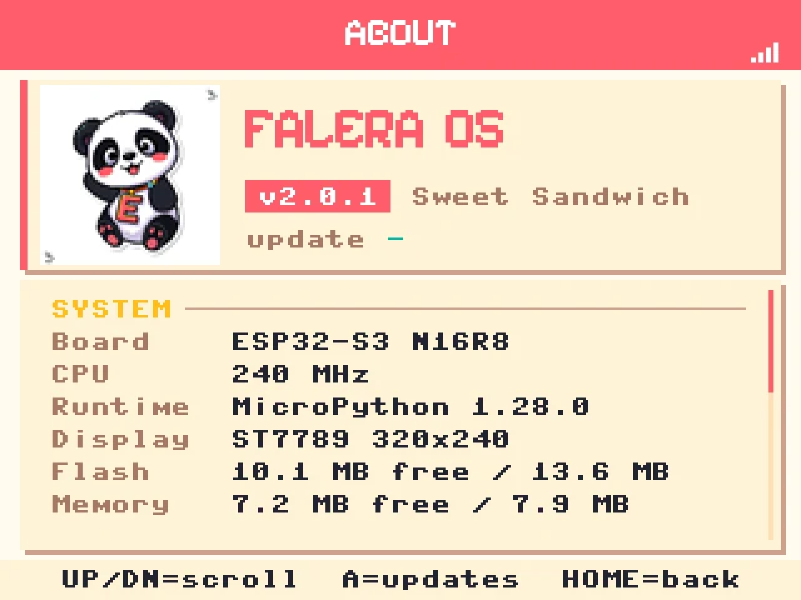
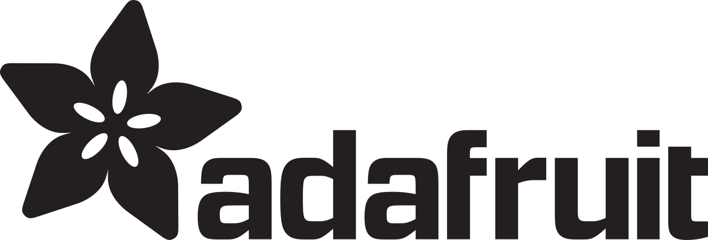
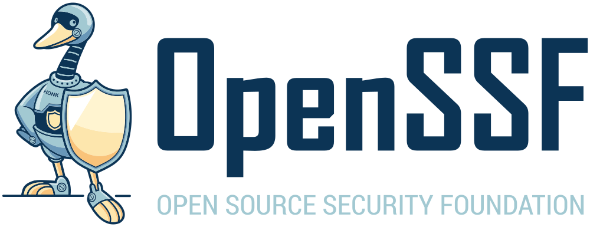
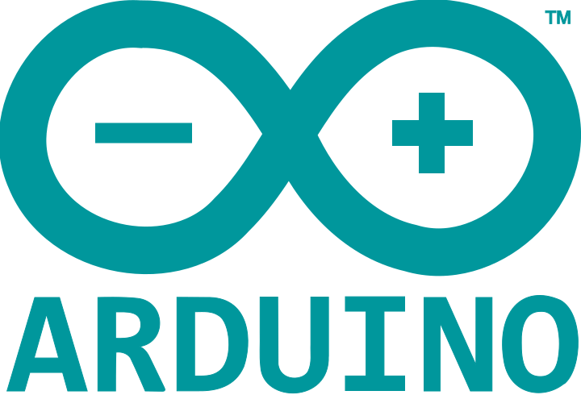
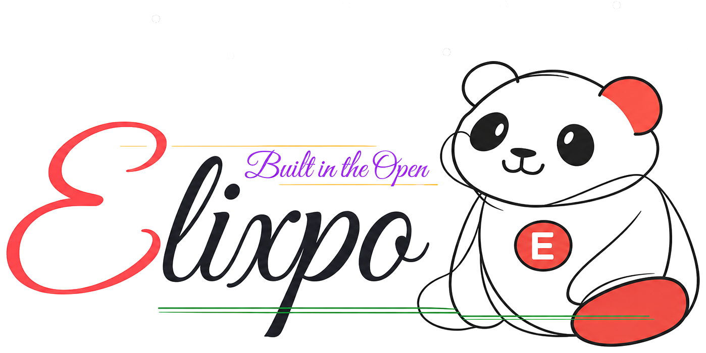

JIS University · ABP Infocom 2026 · Kolkata
JIS University · ABP Infocom 2026 · KolkataFalera:An Open-Source Smart Badge
with Its Own Operating System
I designed the board and wrote its operating system.
Its own operating system
FaleraOS, on MicroPython: apps, an App Store and over-the-air updates.
Certified open hardware design
Certified by OSHWA, UID IN000107 (CERN-OHL-P).

Smooth video on a microcontroller
RV565, a video format I invented, took playback from 0.5 to 24 FPS. Featured on the Adafruit blog; preprint on arXiv.

The final board, in 3D
Hi, I'm Lumi. Come and try the badge!



Featured by
 Recognised by
Recognised by


Recognised by



Ayushman Bhattacharya
ayushman@elixpo.com
Founder, Elixpo · JIS University
falera.elixpo.com
with Vivek Yadav · Anwesha Chakraborty
